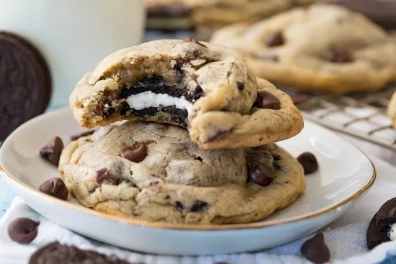
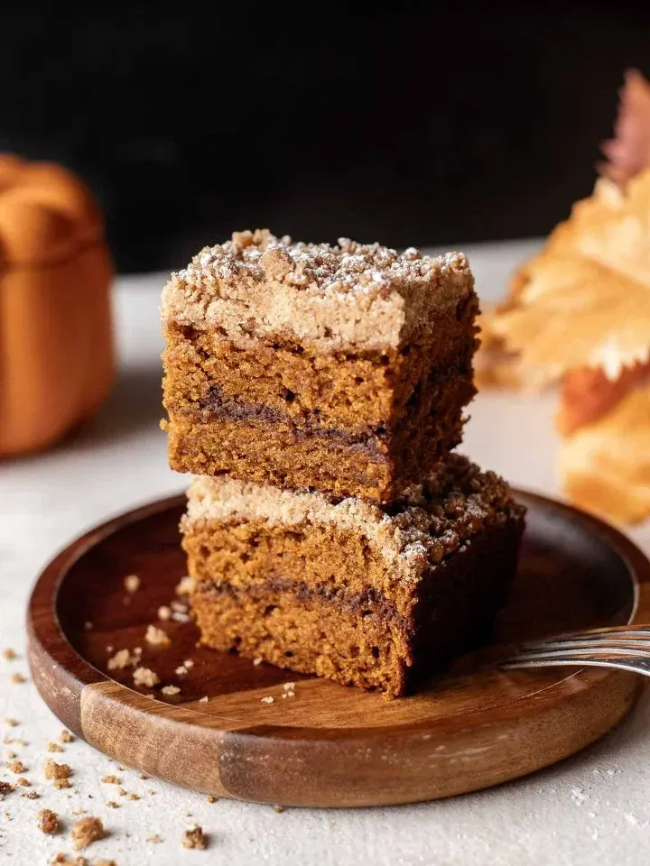
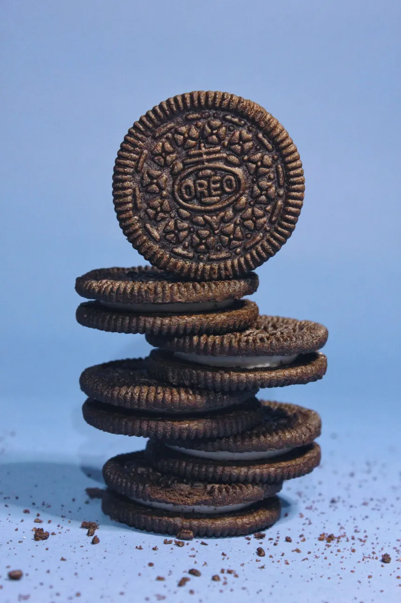

Cookies and Cakes

Cookie-Oreo Hybrid
Not for the faint of heart. This luxury hybrid of an oreo inside a cookie will not only decimate your tongue with absolute sweetness, but you will also be left with an empty wallet as you will want to buy the whole stock. Seriously, this cookie tastes great.
Milky Way Coffee Cake
They say all gentle giants are soft on the inside. This coffee cake could almost be compared to Choji then. Although it is not a cookie, its as good as one and it is a essentially a soft and fluffy cloud that would immediately make your taste buds find light where it has only eaten the darkness of foods that are cheap products we didn't make. Go and buy this cake, you won't regret it.
Advanced Oreos MK.II
We like to call ourselves the "Apple" of sweets and this advanced upgrade of the classic Oreo is a culmination of our work that proves exactly that. Retrofitted with the latest dough, engravings that cost a fortune, and a perfect circle design that follows a millenium of traditional cookie design. These Advanced Oreos are the culmination of years of research and development aimed to make the world a better place, and it all starts with these cookies. Why don't you go ahead and purchase a set? Did I forget to mention these cookies were blessed by the Gods themselves? Even Kratos loves it.Reviews
Tim Cook
Former CEO of Apple
While in meetings discussing the future of our eco-system, I had hit a wall. How could I deliver the next iPhone to the public? I decided to try the Coffee Cake to clear my mind. I don't think the world is ready for these cookies, infact the world may never be ready as these cookies are so good they could practically kill me. I'm not even diabetic, but I'm pretty sure my blood sugar levels are rising higher than inflation. Wow, I can't believe I never tried these cookies! Thank you Kirin Cookies for making the world a better place.
Lin Tao
Executive Officer and CFO of Sony Interactive Entertainment
I do not know how to cook my own food in the morning, so I decided to buy some of these cookies. However during delivery a group of pirates attacked the driver and stole my cookies. I chased after them, and after 5 minutes of driving I caught up to them. However, they took the cookies hostage and demanded that I give up physical media from the public to have my cookies. Without hesitation I agreed, and they let me have my cookies in exchange for restricting the public from having physical media. It doesn't matter anyways, Blu-Ray is dying. These cookies are a godsend and without it my life would be incredibly boring. Thank you Kirin Cookies!
Ye
Genius of YZY
After finishing my album, I bought these cookies for my wife and I. These are the best cookies ever! Bianca and I have decided to automate the purchasing of these cookies so that we never run out. My new album comes out next year, and I cannot wait to share the music! Thank you Kirin Cookies for not leaking my music, your cookies are delicious!